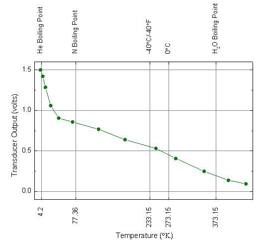

Benutzerdefinierte Hilfsstrichspositionen
UserDef-TickPosition
Zusammenfassung
Dieses Diagramm zeigt Ihnen, wie die Hilfsstrichspositionen mit Hilfe eines Datensatzes festgelegt und die benutzerdefinierten Hilfsstrichsbeschriftungen dort angezeigt werden.
- 
Origin-Version mind. erforderlich: Origin 2015 SR0
Was Sie lernen werden
- Hilfsstrichsposition mit Hilfe eines Datensatzes festlegen
- Benutzerdefinierte Hilfsstrichsbeschriftungen zeigen
Schritte
- Kopieren Sie die Sample-Daten und fügen Sie sie in Zeile 1 der Spalte A im Origin-Arbeitsblatt ein. Legen Sie die erste Zeile als Langname fest und die zweite Zeile als Einheiten.
- Markieren Sie Spalte A und B. Wählen Sie Zeichnen: Einfache 2D: Punkt-Liniendiagramm im Menü. Alternativ können Sie auch auf die Schaltfläche Punkt-Liniendiagramm auf der Symbolleiste der 2D-Grafiken klicken.
- Klicken Sie zum Öffnen des Dialogs Details Zeichnung doppelt auf das Diagramm. Legen Sie auf der Registerkarte Symbole das Symbol als einen gefüllten Kreis und die Farbe mit Oliv fest. Ändern Sie auf der Registerkarte Linie die Linienfarbe in Oliv und klicken Sie dann auf OK, um den Dialog zu schließen und die Änderungen anzuwenden.
- Klicken Sie doppelt auf die X-Achse, um den Dialog Achsen zu öffnen. Geben Sie diese Einstellungen der X- und Y-Achsen auf der Registerkarte Skalierung sowohl für Horizontal als auch Vertikal ein:
- Gehen Sie auf der Registerkarte Linie und Hilfsstriche zur Seite Oben und Rechts und aktivieren Sie Zeigen, um die Achsen oben (rechts) anzuzeigen. Legen Sie den Stil der Hilfsstriche, wie im Diagramm unten zu sehen, fest:
- Klicken Sie dann auf die Schaltfläche Anwenden auf. Legen Sie im Dialog Auf andere anwenden die folgenden Einstellungen fest:
- Klicken Sie auf OK, um den Dialog Auf andere anwenden zu schließen, und kehren Sie zum Dialog Achsen zurück.
- Gehen Sie zur Registerkarte Anzeige auf der Seite Beschriftung der Hilfsstriche und legen Sie die Hilfsstrichsbeschriftungen für Unten wie im folgenden Diagramm fest. Zusätzlich müssen Sie die Hilfsstrichsbeschriftungen um 90 Grad auf der Registerkarte Format sowohl für die obere als auch für die untere Achse drehen (auf der Seite Unten).
- Legen Sie auf der Seite Unten unter Beschriftung der Hilfsstriche der X-Achse die Drehung unter Drehen (Grad) auf 90 fest.
- Wechseln Sie zur Registerkarte Gitternetze im Dialog Achsen. Aktivieren Sie Zeigen in der Gruppe Hauptgitternetzlinien sowohl für Vertikal als auch für Horizontal:
- Klicken Sie auf OK, um den Dialog Achsen zu schließen. Passen Sie den Layerbereich auf der Registerkarte Format: Layer: Größe und Performance an. Das Diagramm sollte am Ende folgendermaßen aussehen:
Beispieldaten
| Temperature |
Transducer Output |
Custom Temperature |
Benutzerdefinierte Beschriftung |
| °K |
volts |
|
|
| 2,5 |
1,5 |
4,2 |
He Boiling Point |
| 2,5 |
1,5 |
4,2 |
He Boiling Point |
| 7,3 |
1,42048 |
77,36 |
N Boiling Point |
| 13 |
1,28681 |
233,15 |
-40°C/-40°F |
| 24 |
1,06011 |
273,15 |
0°C |
| 41 |
0,90549 |
373,15 |
H2O Boiling Point |
| 70 |
0,85831 |
|
|
| 125 |
0,7679 |
|
|
| 181 |
0,63948 |
|
|
| 246 |
0,53202 |
|
|
| 288 |
0,40753 |
|
|
| 348 |
0,24898 |
|
|
| 399 |
0,13759 |
|
|
| 436 |
0,09435 |
|
|